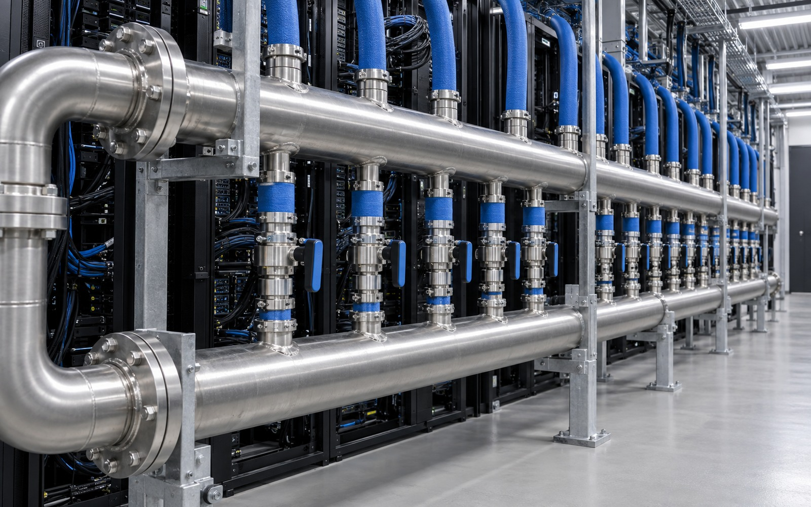
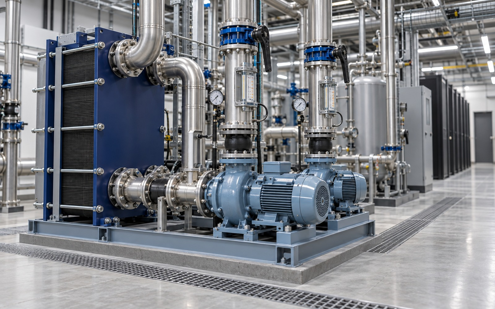

확장 가능한 액체냉각 인프라
CDU와 냉각수 배관, 분배계통을 모듈화해 랙 증설과 설비 변경에 유연하게 대응합니다.
- CPU·GPU 열부하와 랙 밀도에 맞춰 냉각 방식과 용량을 산정
- 공랭, 직접수냉, 액침냉각의 적용 조건을 설비별로 검토
- 열원부터 랙까지 공급·환수 경로의 압력손실과 유량 균형 분석



AI 인프라를 위한 확장형 액체냉각과 핵심 유틸리티 네트워크를 제공합니다. FLOVEX는 공정 분석과 디지털 설계, 제작, 시공, 유지보수를 하나의 책임 있는 체계로 연결합니다.
서버 부하와 확장계획을 반영한 냉각·유틸리티 설계로 데이터센터의 안정적인 운영을 지원합니다.
CDU와 냉각수 배관, 분배계통을 모듈화해 랙 증설과 설비 변경에 유연하게 대응합니다.


핵심 유틸리티의 공급 경로와 제어 체계를 분리해 점검과 장애 상황에서도 운영 연속성을 확보합니다.

유량과 압력, 온도 데이터를 바탕으로 운전 조건을 점검하고 에너지 사용과 유지보수 시점을 관리합니다.


공간 계획부터 배관 제작, 현장 설치, 시운전까지 동일한 품질 기준으로 프로젝트를 관리합니다.